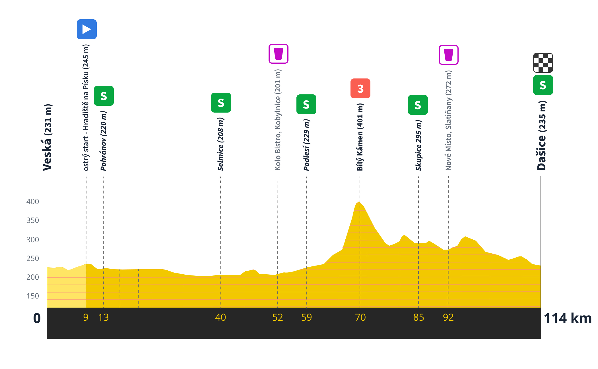

Orličky > Trutnov (109km/1850m)
Etapa s pořadovým číslem 1 letošního G-tour by se dala vzletně pojmenovat jako “Sudetská”. Není ovšem žádným překvapením, že by se stejně daly pojmenovat i všechny ostatní etapy letošní i minulé. Na dojmy z etapy jsme se zeptali přímo stavitele trati a hlavního traťového referenta pana V.
Pořadatel 1 (tazatel): Pane V., díky moc, že jste si udělal čas na krátký rozhovor o etapě 1 v rámci letošního vrcholu sezony. Na co se tedy můžou závodníci těšit? Pořadatel 2 (pan V.): Já děkuji za pozvání a je mi nesmírnou ctí, řekl bych možná, že jsem poctěn či až dojat k slzám, že se mohu jako první podělit se závodníky, týmy, fanoušky (hlavně tedy fanynkami) a vůbec všemi přáteli kvalitní cyklistiky, že se mohou těšit na skutečný sportovně kulturní skvost, který - marně pátrám v paměti - nebude mít v historii našeho dlouholetého závodu obdoby. Nerad bych úplně zabíhal do detailů, abych přece jen udržel všechny výše zmíněné v takovém příjemném, řekl bych dokonce až magickém napětí. P1: No, to já jsem si naopak právě myslel, že bys mohl být konkrétnější. Klidně magicky, ale prostě konkrétnější. Přece jen, závodníci nepojedou ten, no, orientační běh - takže by asi bylo dobré je detailněji seznámit s tratí už s předstihem. Takže? P2: Hmm, no je to tak. Chtěl jsem zkrátka i v průběhu našeho rozhovoru tak trochu pozdržet to prolomení nevyřčeného. Já mám tohle napínání rád a myslím si, že není úplně od věci se občas trochu zastavit a trochu rozjímat nad tím, co se kolem nás děje či co nás čeká v nejbližší budoucnosti. Přece jenom nikdy.. P1: No, a u toho bych se právě rád na chvíli zastavil. Co nás tedy čeká hned na začátku letošního G-tour? P2: No, dobrá tedy. Pominu-li prolog, tak je zřejmé, že první etapa bude možná takové předčasné vyvrcholení letošního ročníku - no, uvidíme, jestli to nejsou moc silná slova v tomto kontextu, ale jsem přesvědčen o tom, že tato trať skutečně nabízí naprosto neskutečnou variabilitu, co se týče terénu, profilu, podkladu, krajiny, zastávek i neuvěřitelné množství úseků vhodných k úniku, spurtu i pohodlnému prolnutí se závodním grupetem. Tak nějak si myslím, že v této etapě se skutečně najde každý - ostatně tak byla tato etapa i pojata. Já jsem se jako stavitel snažil zahrnout všechny různě zajímavé pasáže a jsem si jistý, že i naprostý cyklistický začátečník si povšimne všech důvtipných laskominek, které mu budou nabídnuty. P1: To zní lákavě! Nebudeme asi zabíhat do úplných podrobností (celou trať si může kdokoliv prohlédnout na mapě níže), nicméně by mě zajímalo, kterou část etapy bys rád vypíchnul a proč? P2: To je velice zajímavá, ale zároveň i těžká otázka. Jak už jsem řekl, tak si myslím, že trať je naprosto geniální co se týče své variability. Jsou na ní tedy zajímavá místa poměrně hutně rozeseta. Pokud bych měl ale přeci jen z toho nepřeberného množství spektakulárních zážitků vybrat jen jeden, tak to bude asi část po přejezdu trati na polské území, kde se bude asfaltek klikatit horizontálně i vertikálně podél roztomilého údolí Divoké Orlice. Tato část nabídne jezdcům všech kvalit spoustu prostoru k prezentaci svých nejlepších cyklistických fines ve formě úniků, spurtů a sjezdů. Není pak ani náhodou, že tato lyrická pasáž bude hned po přejezdu zpět na české území korunována dramatickým výjezdem do šerlišského sedla. V tomto místě už bude, pravda, hrubá síla silnější než jízda na krásu - ale to je vlastně nakonec v pořádku. V každém případě je nutné říci, že vítězem bude nakonec každý - každý vyhraje ten pocit být nedílnou součástí tohoto silného zážitku, té radosti z tohoto cyklického pohybu s těmi nejlepšími kamarády. P1: Tak vítězem bude ale asi stejně nakonec ten, co přijede první, že? No, ale díky za zajímavé postřehy. Budeme se těšit. P2: Tak určitě. Nechtěl jsem to říct tak drsně. Jinak není zač.
